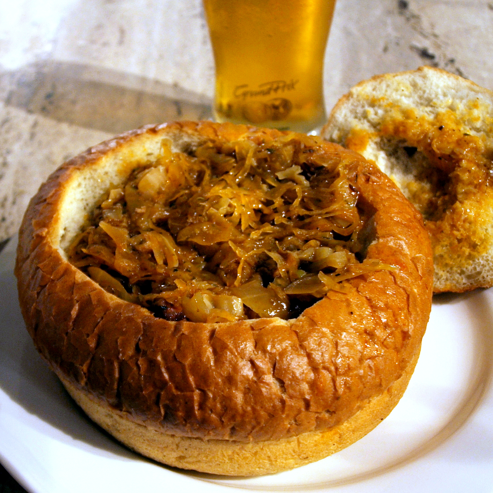

Bigos

Bigos, often translated into English as hunter's stew, is a Polish dish of chopped meat of
various kinds stewed with sauerkraut and shredded fresh cabbage. It is served hot and can be enriched with
vegetables, spices or wine.
Originally from Poland, the dish also became traditional in the areas of the vast Polish–Lithuanian
Commonwealth.
Ingredients
- Pork
- Pickled cabbage
- Shredded fresh white cabbage
- Kiełbasa, Polish smoked sausage
- Onions
- Mushrooms
- Salt, black peppercorns, allspice, juniper berries and bay leaves
Steps
- The sauerkraut is often rinsed and drained before being chopped and mixed with shredded fresh cabbage. The
proportion depends on the sauerkraut's maturity – the longer it has cured, the more sour it tastes, calling
for more fresh cabbage to balance the flavor.
- Traditionally, cabbage was pickled in fall, so bigos made at that time could be made with only half-cured
sauerkraut, but by early spring, the sauerkraut had to be combined in equal parts with fresh cabbage.
- The mixture is precooked in a small amount of water before being mixed with the braised meat and left to
simmer for several hours. Ideally, the stew should thicken through evaporation alone, but flour, roux,
crumbled rye bread or a grated raw potato may be added to it to take up excess moisture.
- Other ingredients often added to bigos include onions, diced and browned in lard together with the meat, and
dried forest mushrooms that are precooked separately in boiling water.
- The stew is usually seasoned with salt, black peppercorns, allspice, juniper berries and bay leaves.
To the main page
To the top